ASHG18
American Society of Human Genetics 68th Annual Meeting
2019-07-12 14:54:44
Parameters
| Parameter | Value |
|---|---|
| hashtag | #ASHG18 |
| start_day | 2018-10-16 |
| end_day | 2018-10-20 |
| timezone | America/Los_Angeles |
| theme | theme_light |
| accent | skyblue3 |
| accent2 | #B5D2E6 |
| kcore | 30 |
| topics_k | 9 |
| bigram_filter | 15 |
| fixed | TRUE |
| seed | 1 |
1 Introduction
An analysis of tweets from the #ASHG18 hashtag for the American Society of Human Genetics 68th Annual meeting, 16-20 October 2018 at the San Diego Convention Center, San Diego USA.
A total of 18120 tweets from 4031 users were collected using the rtweet R package.
2 Timeline
2.1 Tweets by day

2.2 Tweets by day and time
Filtered for dates 2018-10-16 - 2018-10-20 in the America/Los_Angeles timezone.
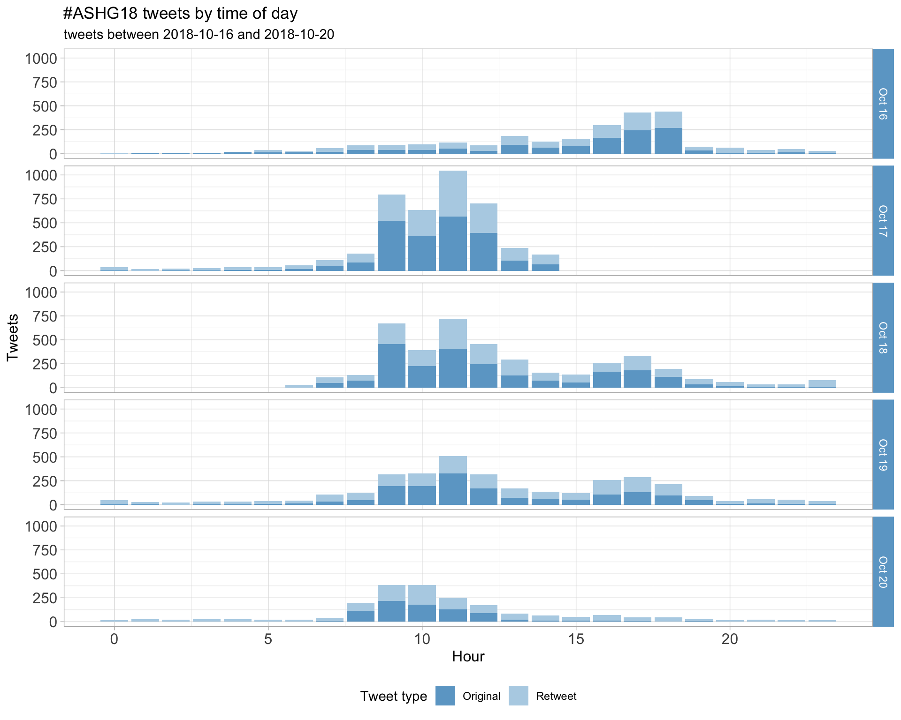
3 Users
3.1 Top tweeters
Overall

Original
Retweets
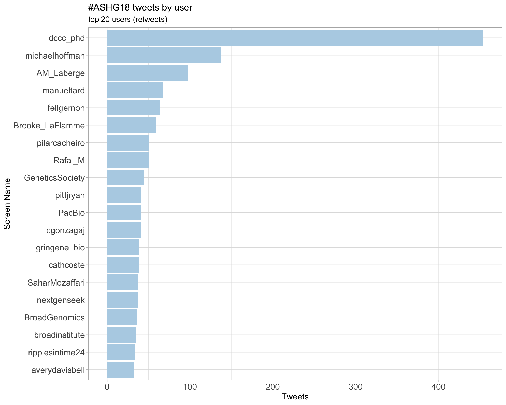
3.2 Retweet proportion
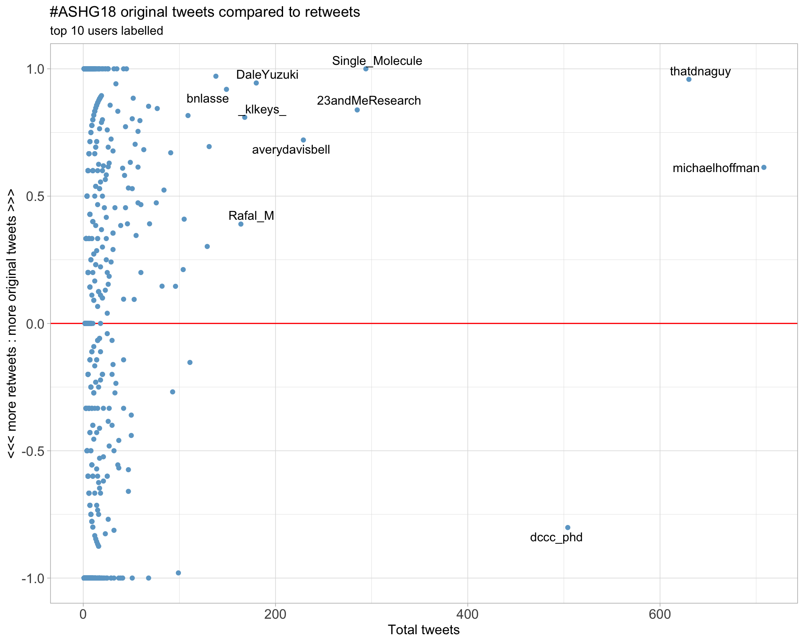
3.3 Top tweeters timeline

3.4 Top tweeters by day
Overall
Day 1

Day 2

Day 3
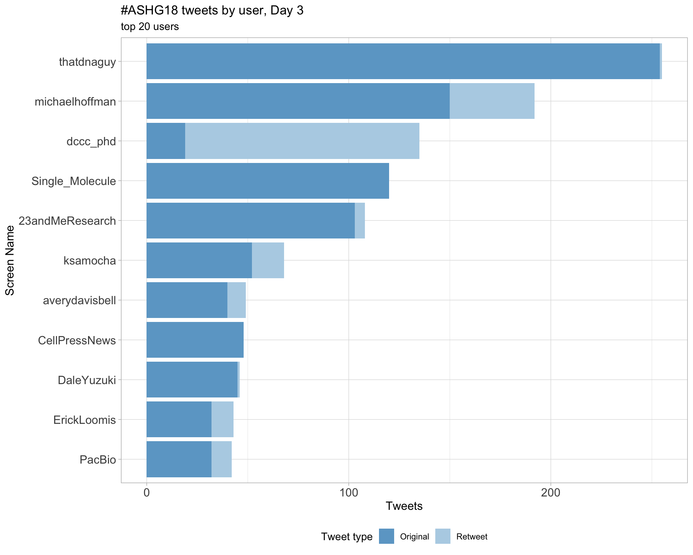
Day 4

Day 5

Original
Day 1
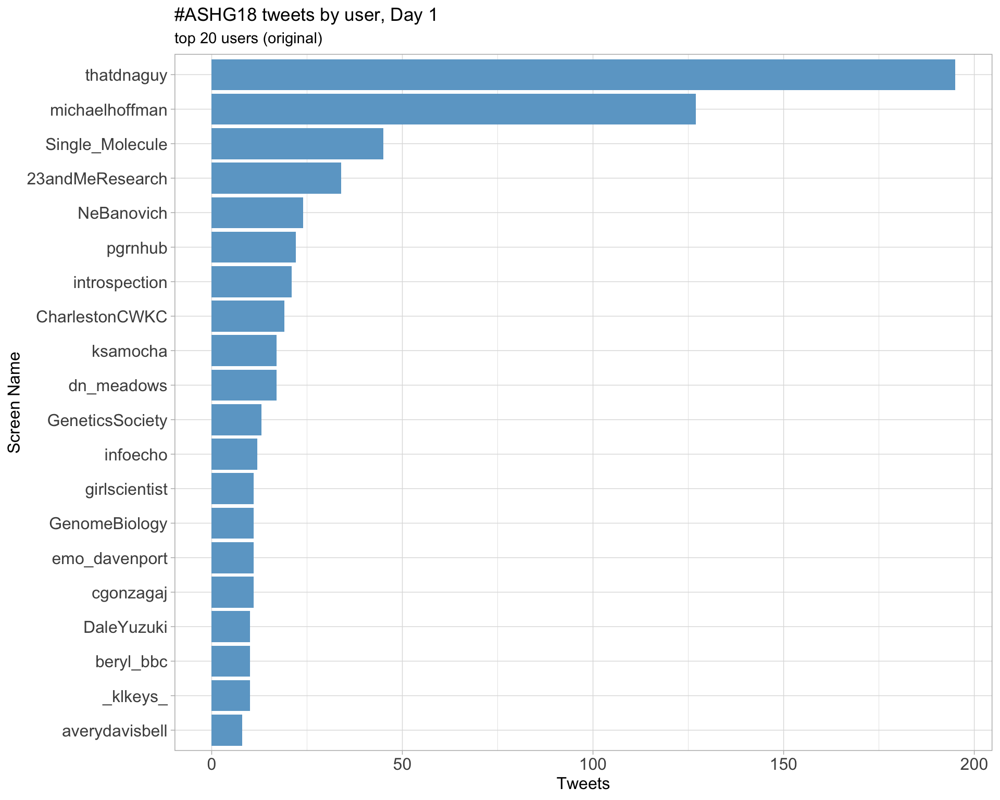
Day 2

Day 3

Day 4
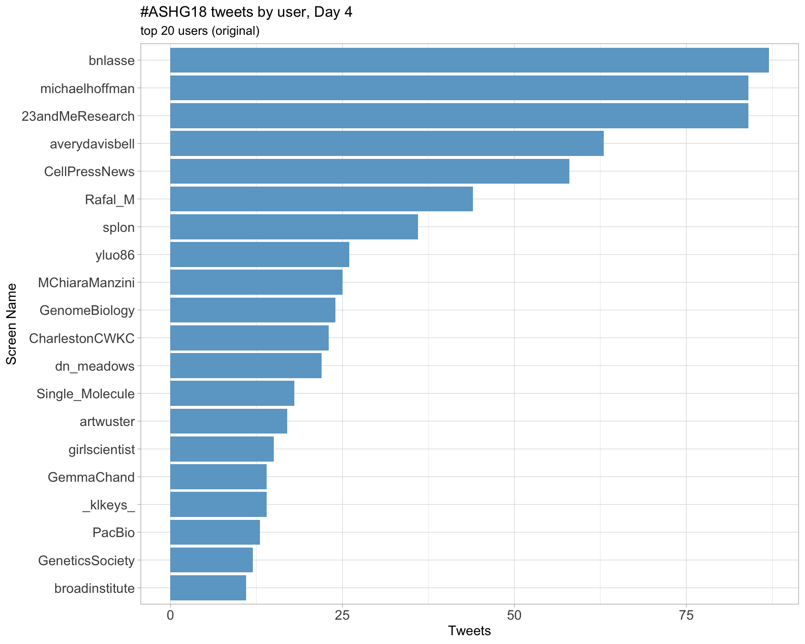
Day 5

Retweets
Day 1
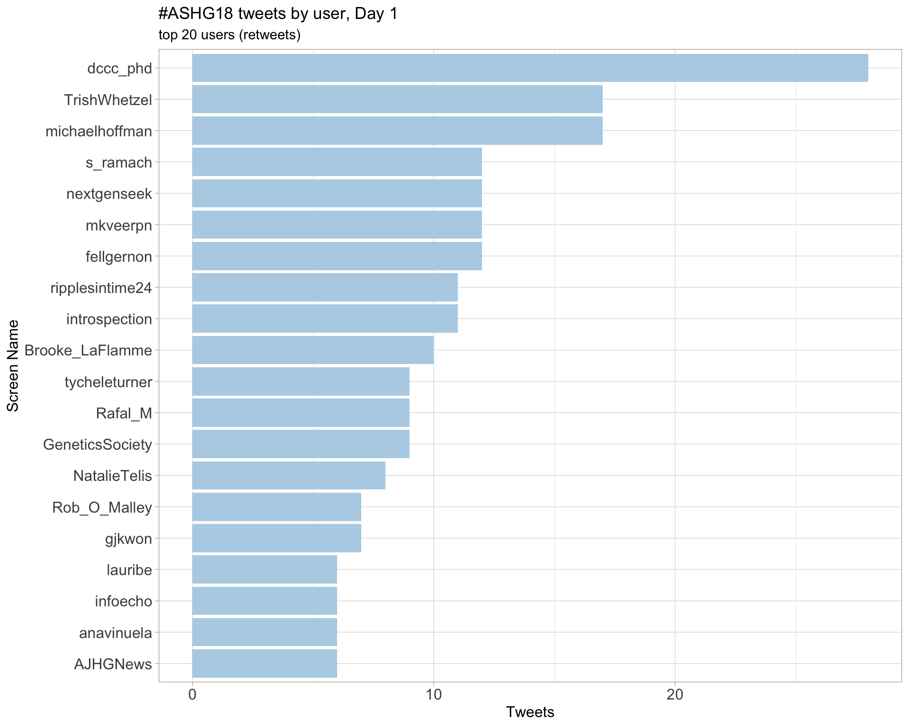
Day 2
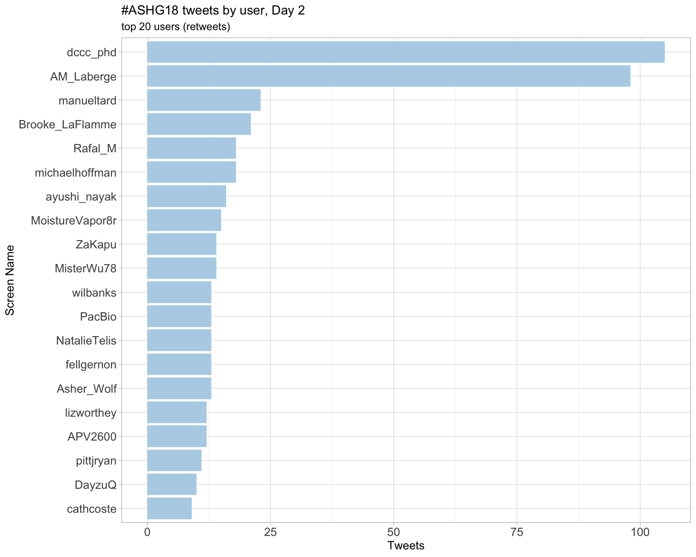
Day 3
Day 4
Day 5
4 Sources
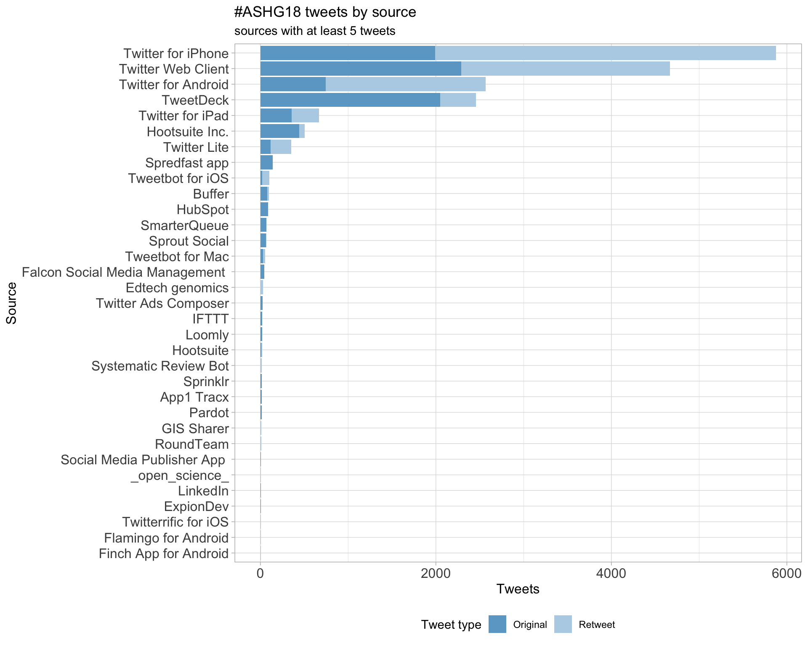
5 Networks
5.1 Replies
The “replies network”, composed from users who reply directly to one another, coloured by PageRank.
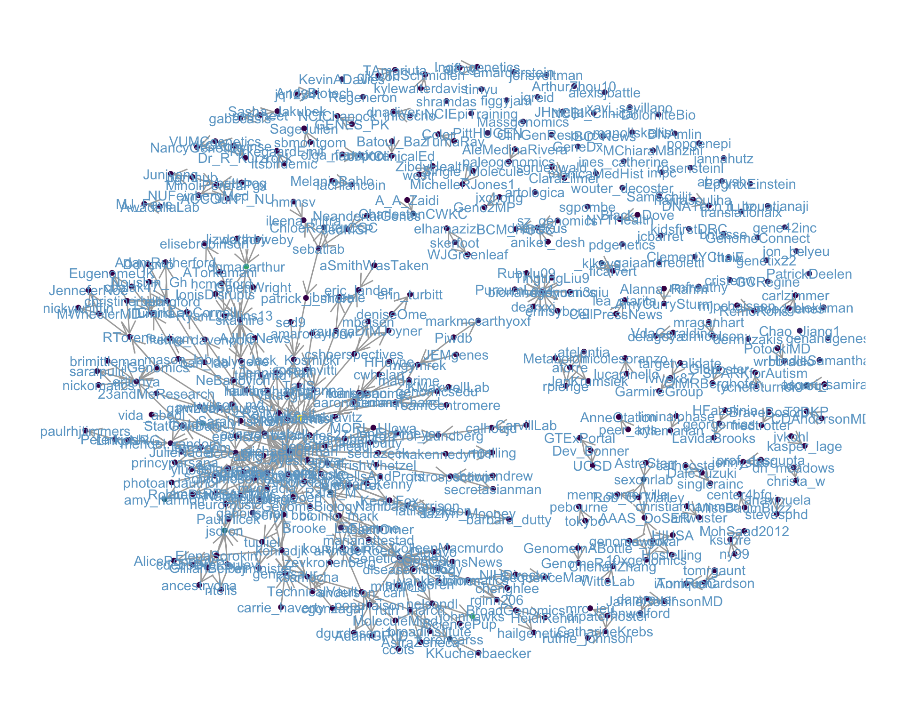
5.2 Mentions
The “mentions network”, where users mention other users in their tweets. Filtered for a k-core of 30. Node colour and size adjusted according to PageRank score.

6 Tweet types
6.1 Retweets
Proportion

Count
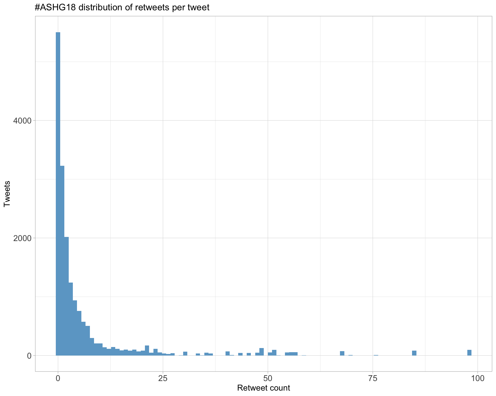
Top 10
| screen_name | text | retweet_count |
|---|---|---|
| jsdron | With #ASHG18 ending, I want to share an unpleasant experience. After sharing my research with a “poster neighbour” and hearing about his in return, I was pleased that not only had I shared my own work, but I also learned something about a different area of genetics. 1/5 | 98 |
| sexchrlab | Dear #ASHG18, As human geneticists, we cannot “just focus on our research”. We cannot pretend that our research isn’t being misused. Doing so is being actively complicit with white supremacy/nationalism. Full stop. https://t.co/1iOlMRTuPt (1/n) | 85 |
| erlichya |
So what did we have this week in human genetics? * A Senator taking a DNA test to fight political opponents * Major parts of US can be under genetic surveillance via DTC tests * UKBB reports results for 500K people * Nature calls for PRS in clinic The revolution is here #ASHG18 |
68 |
| Hutton | GRC: “indefinite postponement of GRCh39”, instead will provide iterative improvements to GRCh38. “If you have been holding off on adoption of 38 and are instead waiting to jump to 39…please don’t!” #ASHG18 | 57 |
| dgmacarthur | “our code is on github and our preprint is up on bioRxiv” - things I love hearing during #ASHG18 talks. Instant credibility boost. | 56 |
| NatureRevGenet | Congrats to @skathire on the #ASHG18 Curt Stern Award! A free-to-read link to his Review on ‘Genetics of coronary artery disease: discovery, biology and clinical translation’ is here: https://t.co/NzqvWJIA0O https://t.co/elVXYJmyUO | 55 |
| GeneticsSociety | “We must recognize the disruptive nature of our work…maintaining sensitivity to the nature of our work is important, but we must recognize what exciting work it is.” –@nelsondl at #ASHG18 presidential address https://t.co/begWoDEVhm | 52 |
| heikorunz | On spot for #ASHG18 our ~700k participant study out in @NatureComms asking: Can meta-PheWAS across large biobanks (@uk_biobank, @23andMe, @FIMM_UH, @ChildrensPhila) facilitate decision-making during drug discovery? 1/n https://t.co/80HMiDWPPl | 52 |
| david_a_knowles | ML, functional genomics, RNA-splicing regulation or hi-throughput screens float your ⛵️? I have postdoc positions available in my shiny new lab at @nygenome / @Columbia. Lets chat at #ASHG18 or go to https://t.co/cY6qPVnhqb Please RT! | 51 |
| ScienceNews | “There is no gay gene, but rather non- heterosexuality is influenced by many tiny-effect genetic factors.” #ASHG18 https://t.co/j2Qlm3kjwD | 49 |
Most retweeted
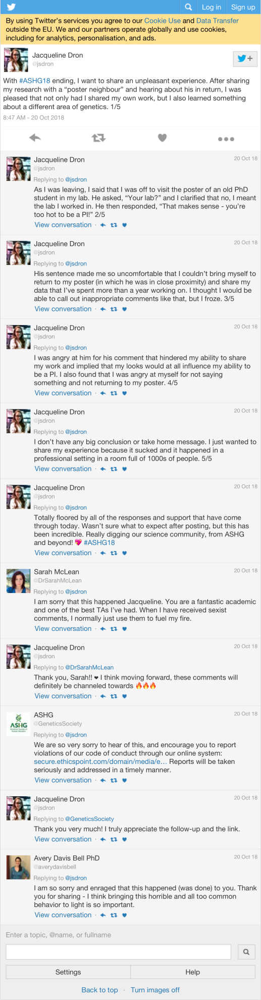
6.2 Likes
Proportion

Count

Top 10
| screen_name | text | favorite_count |
|---|---|---|
| dgmacarthur | “our code is on github and our preprint is up on bioRxiv” - things I love hearing during #ASHG18 talks. Instant credibility boost. | 334 |
| jsdron | With #ASHG18 ending, I want to share an unpleasant experience. After sharing my research with a “poster neighbour” and hearing about his in return, I was pleased that not only had I shared my own work, but I also learned something about a different area of genetics. 1/5 | 300 |
| erlichya |
So what did we have this week in human genetics? * A Senator taking a DNA test to fight political opponents * Major parts of US can be under genetic surveillance via DTC tests * UKBB reports results for 500K people * Nature calls for PRS in clinic The revolution is here #ASHG18 |
188 |
| sexchrlab | Dear #ASHG18, As human geneticists, we cannot “just focus on our research”. We cannot pretend that our research isn’t being misused. Doing so is being actively complicit with white supremacy/nationalism. Full stop. https://t.co/1iOlMRTuPt (1/n) | 153 |
| emo_davenport | Sad to be missing out on #ASHG18 this year due to my own little genetic experiment, but my amazing advisor @ClarkLabCornell is giving my talk on incorporating the microbiome into GWAS on Thursday at 12pm in Room 6C. Check it out! https://t.co/OPN85lkz7y | 144 |
| Magdoll | #ASHG18 is great, but you know what’s better? They have childcare on site, so I don’t have to think about childcare logistics while I’m here. #WomenInSTEM https://t.co/ZK9FclgyOy | 143 |
| introspection | ü§ó Beautiful tSNE of gnomAD (N=125748 exomes) ‚Äî Poster 1464.W by @broadinstitute #ASHG18 #ASHG2018 https://t.co/1sMLb2qnCh | 139 |
| jimmyzliu | Thinking about going to @nanopore reception tonight. Compared to @illumina last night, I heard the line to get in is longer, but the bartender keeps getting your drink wrong #ashg18 | 129 |
| GeneticsSociety | “We must recognize the disruptive nature of our work…maintaining sensitivity to the nature of our work is important, but we must recognize what exciting work it is.” –@nelsondl at #ASHG18 presidential address https://t.co/begWoDEVhm | 128 |
| tuuliel | If you’re still at #ASHG18 - at 9:45am/Session 99 I’ll be presenting new work by the #GTEx consortium on the upcoming release of 17K multi-tissue RNA-seq samples from 838 individuals. It’s an eQTL/sQTL avalanche! | 124 |
Most likes
6.3 Quotes
Proportion

Count

Top 10
| screen_name | text | quote_count |
|---|---|---|
| Mill_lab | Thank you @jsdron for bravely taking control of this #ASHG18 horrible experience & speaking out in a public forum. The strong support and outrage across the board it is garnering makes me hopeful this type of ‘mis’behaviour is on the way out- this thread is a ’must-read’ for all. https://t.co/IDzaHYbNCM | 6 |
| averydavisbell | Read the thread. Unacceptable, infuriating, not nearly rare enough (rate of this type of harassment should be zero). #ASHG18 https://t.co/tNgXFYj2Nr | 6 |
| NeBanovich | DONT. BE. THIS. GUY. #ASHG18 https://t.co/ifTDefWPrI | 6 |
| kerencarss | What a horrible experience. This kind of behaviour is not rare at conferences. #ASHG18 https://t.co/aEYGQnDsQ4 | 6 |
| ADilliott | Forever looking up to this incredible person. I am proud of you for speaking up about this behaviour and it‚Äôs wonderful seeing the rest of the #ASHG18 community rally behind you. This behaviour is completely unacceptable. You are not alone üí™üèº https://t.co/aBVn2kgpgG | 6 |
| saumyads02 | So sorry that you had that experience and outraged at that guy! People need to learn big time on how to behave in a professional setting! #ASHG18 @GeneticsSociety https://t.co/L2veUKFg0y | 6 |
| klkeys | Join me at this timely and important session! I am excited to see @KeoluFox and @NanibaaGarrison lead the discussion on #silentgenomes at #ASHG18 https://t.co/wpntgCjpr8 | 5 |
| AliciaBByrne | Setting my alarm for bright and early tomorrow morning so I can follow the #SilentGenomes session at #ASHG18. Great that both the talks and discussion will be live-tweeted. https://t.co/OgwuecBJFg | 5 |
| kejames | Timely #ASHG18 session at 10:30am PDT today on Indigenous-led initiatives in genomics, featuring an all-indigenous panel. Hashtag is #silentgenomes. h/t @MisterWu78 https://t.co/cM2vIhUquj | 5 |
| hcmefford | Fantastic panel of indigenous scientists in this #SilentGenomes session. #ASHG18 https://t.co/qTKmSpjK4q | 5 |
Most quoted
7 Media
Proportion

Top 10
| screen_name | text | favorite_count |
|---|---|---|
| emo_davenport | Sad to be missing out on #ASHG18 this year due to my own little genetic experiment, but my amazing advisor @ClarkLabCornell is giving my talk on incorporating the microbiome into GWAS on Thursday at 12pm in Room 6C. Check it out! https://t.co/OPN85lkz7y | 144 |
| Magdoll | #ASHG18 is great, but you know what’s better? They have childcare on site, so I don’t have to think about childcare logistics while I’m here. #WomenInSTEM https://t.co/ZK9FclgyOy | 143 |
| introspection | ü§ó Beautiful tSNE of gnomAD (N=125748 exomes) ‚Äî Poster 1464.W by @broadinstitute #ASHG18 #ASHG2018 https://t.co/1sMLb2qnCh | 139 |
| GeneticsSociety | “We must recognize the disruptive nature of our work…maintaining sensitivity to the nature of our work is important, but we must recognize what exciting work it is.” –@nelsondl at #ASHG18 presidential address https://t.co/begWoDEVhm | 128 |
| NatureRevGenet | Congrats to @skathire on the #ASHG18 Curt Stern Award! A free-to-read link to his Review on ‘Genetics of coronary artery disease: discovery, biology and clinical translation’ is here: https://t.co/NzqvWJIA0O https://t.co/elVXYJmyUO | 113 |
| jcbarret | Spot the Europeans. #ASHG18 https://t.co/eEFVGzhEEi | 113 |
| BroadGenomics | Congratulations and thank you @skathire for all your contributions to the field of genomics and the positive impact on people’s lives. The #ASHG18 Curt Stern Award is well deserved. https://t.co/axJWQ9Ilsc | 89 |
| LavidaBrooks | Had fun sharing my findings from my meta-analysis on Alzheimer’s Disease project today at ASHG! #ASHG18 #ASHGtrainee Thanks to to @msuagep for my travel award! @gmiaslab #BlackWomeninSTEM https://t.co/VS8JtbnRjL | 86 |
| johnhawks | Such an honor to talk about human origins in Africa last night at #ASHG18, and many thanks to @nelsondl and @GeneticsSociety for centering Africa in this Presidential forum. https://t.co/ayoCcuVFhh | 79 |
| Piwdb | This just makes me happy #ASHG18 @ceclindgren @saralpulit so well deserved https://t.co/AsBhfF5fjr | 76 |
7.1 Most liked image

8 Tweet text
8.1 Word cloud
The top 100 words used 3 or more times.
8.2 Bigram graph
Words that were tweeted next to each other at least 15 times.

8.3 Topic modelling
Top 10 words associated with 9 topics identified by LDA.

8.3.1 Representative tweets
Most representative tweets for each topic
Topic 1
| screen_name | text | gamma |
|---|---|---|
| Lau_uribefig | En el congreso más importante de Genética Humana, poca presencia de mexicanos. Destacan trabajos del @TecdeMonterrey @H_Infantil_LAC @langebiomx entre poquitos otros. La Genómica es de colaboración, mientras no se hagan consorcios, Mexico estará siempre atrás. #ASHG18 | 0.2136710 |
| mkveerpn | At my last #ASHG17 talk, @APalotie sat with me before the talk started and nodded with fist bumps with lab mates during the talk. During the Q&A, would smile and finally a high five at the end. Awesome mentor and lab mates :) @mitja_kurki @padgorm #ashg18 https://t.co/2Txur73l3m | 0.1469587 |
| gmrepetto | Miembros de Soc Chilena de Genética #sochigen presentando en #ASHG18 #ashg2018 @berebolledo @Jfcg2101 @raverdugos @gmrepetto y mas | 0.1395136 |
| jvkohl | #ASHG18 https://t.co/Rcw3uFIC17 microRNAs (miRNAs) regulate processes related to… cell proliferation, differentiation, survival, metabolism, inflammation, invasion, angiogenesis, and … miR-93-5p inhibited premature cellular senescence… See also https://t.co/K5Fz77tGAw | 0.1384381 |
| databricks | New Blog: Building the Fastest #DNASeq Pipeline at Scale. At roughly the same compute cost, run the Databricks DNASeq pipeline at speeds 3-4x faster than Edico while remaining concordant. #ASHG18 #GATK https://t.co/eowUK8x0vi https://t.co/fbO1CbsuYU | 0.1378114 |
| megisarecruiter | New Blog: Building the Fastest #DNASeq Pipeline at Scale. At roughly the same compute cost, run the Databricks DNASeq pipeline at speeds 3-4x faster than Edico while remaining concordant. #ASHG18 #GATK https://t.co/BNxhXwqPxp https://t.co/Zlw1Biqim1 | 0.1371062 |
| dgapgenes | Congratulations to Charles J. Epstein Trainee Award Semi-Finalists Netta Makinen and @SamSchilit (from the Morton lab) as well as to Charles J. Epstein Trainee Award Finalist @RyanLCollins13 (from the Talkowski lab) for excellence in their human genetics research! #ASHG18 https://t.co/tlCccRxZnm | 0.1315918 |
| broadinstitute | Andy Hollinger is featured in our #WhyIScience Q&A. Meet Andy & colleagues from @BroadGenomics at #ASHG18 booth 1634 & let them connect you with the Broad resources and researchers needed to get your #genomics studies to the finish line: https://t.co/Erv0LXtltg https://t.co/q40H062mBE | 0.1310318 |
| fellgernon |
¿Quién más de la @lcgunam va a estar en #ASHG18? Sé que ya está @AleMedinaRivera allá (póster 1870/T) y creo que @paleogenomics (póster 2706/W) no podrá venir. https://t.co/JGcFESN3rk |
0.1308355 |
| EmbiTec | What’s this big black box? Our photo hood makes it possible to visualize DNA bands without a protective mask, shield of filter obstructive your access to the gel. #ASHG18 https://t.co/AF2mTUOdNm | 0.1297826 |
Topic 2
| screen_name | text | gamma |
|---|---|---|
| RDxWhatElse |
Prof Sally Davies @CMO_England Keep our Antibiotics Working …impressive words https://t.co/tuMdSNblVK #PrecisionMedicine #healthIT #WSC2018 #ASHG18 #worldstroke2018 #flaacos18 #ICRE2018 #JIBinnov18 #FAAM2018 #PRINT2018 #WONCA2018 #CUS18 #18IAEM #Connect2Health #SEMERGEN18 |
0.1779638 |
| tanghaibao | Fritz Sedlazeck @sedlazeck: SV caller (hi FP, low FN) and SV genotyper (hi FN, low FP), call SV with Delly, Manta and Lumpy, and merge with SURVIVOR, input to SV genotyper #ASHG18 | 0.1683657 |
| michaelhoffman | YE: Information in common identifiers in bits: Sex: 1 Eye colour: 1.4 ABO/Rhesus blood group: 2.2 State of residence: 5.0 Height: 5.0 Year of birth: 6.3 Day and month of birth: 8.5 Surname: 12.9 Zip code: 13.8 #ASHG18 | 0.1573767 |
| genome_sheriff | AN’ JUST SO YA KNOW, I’M AWARE THAT SKUNKS ARE EUTHERIAN MAMMALS THAT CAIN’T LAY NO EGGS. THEY’RE GOOD CRITTERS, AN’ I DEEPLY APOLOGIZE FER COMPARIN’ THEM TO NEFARIOUS GOOD-FER-NUTHINS. #ASHG18 | 0.1539848 |
| ElenaSorokin | @GillianBelbin: Diaspora populations within #UKBiobank including non-British white pops from #India #Bangladesh and founder effects in outer British Isles eg Orkney, Outer Hebrides #ashg18 | 0.1445362 |
| thatdnaguy | #ASHG18 JH: 2.5-1.0M years ago the Homo genus shows up. larger brains than australopiths. set on larger brain trajectory. Homo erectus human like in body size and shape. brain a little smaller, but larger than australopiths. | 0.1406614 |
| StatGenDan | WD: Q: What about the Type I error of your approach? A: BF converge almost surely to zero as the sample size grows. Not computed the FDR yet. Q2: How sensitive to pop admixture? A2: Not looked at yet. || Cited this paper by Shim & Stephens https://t.co/MceImTjqzu #ASHG18 | 0.1365776 |
| pgrnhub | Dr. A Shuldiner #ASHG18: The Old Order Amish: a homogenous founder population – founded by 200-600 migrating from Switzerland 15 generations ago. Cool findings in the Amish - inform biology and precision medicine - e.g. APOC3, CYP2C19, APOB, LIPE, KCNQ1 | 0.1325677 |
| pgrnhub | #ASHG18 @PTurnbaugh 1. Microbiome contributes to inter individual differences in ADME. 2. The microbiome is dynamic and responsive to environmental factors like diet. 3. Long way to go before microbiome-baed #precisionmedicine is a reality. | 0.1312820 |
| PittHUGEN | Tanvi Nagpal in @Pittdeptofmed presents her work w Celeste Shelton on association b/w SLCO1B & alcohol-associated chronic pancreatitis at Poster 2289. #ASHG18 | 0.1305766 |
Topic 3
| screen_name | text | gamma |
|---|---|---|
| JesperMaag | gganatogram now includes a cell diagram (cellogram?)! Please also cite @HumanProteome if using the cell and @ExpressionAtlas if using the anatograms. https://t.co/f0KcBetmCe #rstats #ggplot2 #dataviz #gganatogram #ASHG18 https://t.co/MfZqSf9mCl | 0.1435266 |
| bnlasse | JX: another ex: boundary del leading to over-express of ERBB4 oncogene in breast cancer (unpublished), again 4C and find this neo-TAD may cause activation of gene in cell line [missed cell line]; crispr editing to delete another boundary induces abberant gene expression #ASHG18 | 0.1432936 |
| fluidigm | At #ASHG18? Join us for lunch today at 12:30pm. Hear how you can improve sample tracking and quality assessment with microfluidics from Tae-Hwi Schwantes-An, PhD, of Indiana U. School of Med. and David King, PhD, VP of RnD at Fluidigm. Rm 28B. #ASHG2018 https://t.co/Z2aPvbZdLI https://t.co/zfcHgds7QI | 0.1430246 |
| CellPressNews | A proteome-wide assessment of thermal stability and solubility during the #eukaryotic cell cycle shows pervasive variation in #mitosis and G1 and a fundamental remodeling of the #biophysical environment of the mitotic cell #IDPs @CellCellPress #ASHG18 https://t.co/mkPKLznADv | 0.1427328 |
| anikagupta18 | Crazy (incredible) seeing two of my worlds collide by going to lunch w labmates from a past home in @dpwall00’s group and current rotation home in Alkes Price lab. And tonight will be time w @kasper_lage lab friends, who graciously made this trip possible! Thanks #ASHG18 https://t.co/aDLmp3EoxY | 0.1399510 |
| fluidigm | At #ASHG18? Don’t miss the Fluidigm lunch symposium today at 12:30pm. Hear how you can improve sample tracking and quality assessment with microfluidics from Tae-Hwi Schwantes-An, PhD, of Indiana U. School of Med. and David King, PhD, VP of RnD at Fluidigm. Rm 28B. #ASHG2018 https://t.co/ZbWqfwB5mD | 0.1393876 |
| PacBio | Studies of mobile element insertions in bulk & single cell experiments using standard WGS approaches may underestimate the # of L1Hs insertions near or nested within reference LINE-1s, according to @ryan_e_mills lab. Visit Weichen @ArthurZhou10 now at poster 1701 #ASHG18 https://t.co/V4L6m7ZpAH | 0.1388108 |
| averydavisbell | @fellgernon @BenjaminNeale I prefer women/men or female/male - they’re not perfect since human gender and sex aren’t binary but they do a decent job as short hand. “Boys and girls” feels needlessly (verging in offensivey) infantilizing and perhaps extra gendered. #ASHG18 | 0.1372269 |
| klkeys | GB: Four IBD-sharing among self-identified South Asians. As in BioME, we see signatures of founder effects. Diaspora populations very recent (~1960s onward). IBD by geography shows higher IBD in UK north, islands, rural areas, lower in S. England + metros. #ashg18 | 0.1363298 |
| amymaxmen | The ironic thing about nationalists flocking to genetic tests for confirmations of purity is that most large genomics studies uncover all sorts of mixing. Humans are just a bunch of tribes having sex with each other, making mixed babies, and forming new tribes. #ASHG18 #ASHG | 0.1359739 |
Topic 4
| screen_name | text | gamma |
|---|---|---|
| RichShaffer108 | Putin Lives in a World Without Rules #TrumpCrimeFamily boss of all bosses #toad #trump #PutinsPuppet #news #newspacerace #KashoggiMurder #Kabul #Kashoggi #ASHG18 #AADHum2018 #AKGOV #CGIU2018 #Dodgers #ESMO2018 #FBRParty #GCEC2018 #ImpeachTrump #Jeopardy https://t.co/6hZhdaI7g1 | 0.1893245 |
| pmerel | #ASHG18 G. Gursoy qui nous confirme que memes les données brutes de génomique fonctionnelle (RNAseq) sont la source de Privacy Leaks. Elle propose une methode de protection qui reduit meme la taille des bam files de 90% !!!! | 0.1782509 |
| genetisaur |
Delay out of BOS, sprint across airport, miss connection in PHL. But wait! Another delay in PHL due to tire issue. Missed SAN curfew, so maybe flying to LAX then bus to SAN In other words, westbound red eye can’t hold us from #ASHG18! (Time travel maybe optimistic though) https://t.co/8YLZwPbEEY |
0.1530702 |
| 23andMeResearch | PV: From Visscher to Fisher: His wife, Naomi Wray, sister is Alison Wray, her husband is Mike Wallace, his mom Margaret Wallace was RA Fisher’s long term research assistant - cool scientific connection! #ASHG18 | 0.1526310 |
| Lau_uribefig | Interesados en datos de población latina y farmacogenomica. https://t.co/JE9Nsl5fVe de Stanford Uni tiene info de 22K latinos. #ASHG18 | 0.1457718 |
| michaelhoffman | CL: Advice: - Lean in/hang on step up - Be positive, persistent, polite - Assertiveness ≠ aggression - Choose a work environment supportive of you - Choose a mentor supportive of you - Choose a mentor that you can buy into and respect #ASHG18 | 0.1445255 |
| Covaris | Todays the day! Come to CoLab #1 at 10:00 AM to hear Byung Woo Kim’s presentation titled: Standardization of the ChIP workflow using Covaris Adaptive Focused Acoustics® (AFA®) to study the transcriptional regulation of SOD1 in ALS pathogenesis. #ASHG18 #ChIP https://t.co/nZK3s28JqX | 0.1402401 |
| BaylorGenetics | #ASHG18 Oggi dale 11:00 am alle 12:00 pm Federica Gibellini sara’ al nostro stand per rispondere a tutte le vostre domande tecniche riguardanti NGS. | 0.1367726 |
| fellgernon |
Rujia Dai Oligodendrocyte, microglia, neuron upper cortex, neuron deeper cortex, astrocytes SCZD and BP are more related in the neurons from the upper cortex #ASHG18 |
0.1323717 |
| WebsEdge_Health | ASHG TV learns from members of the ASHG Information and Education Committee, Alexis Norris, PhD and Maurice Godfrey, PhD, to talk about what educational programs the ASHG offers its members and to K-12 students and teachers. https://t.co/uM2XUx2wej #ASHG18 | 0.1316777 |
Topic 5
| screen_name | text | gamma |
|---|---|---|
| DiseasePrimers |
#WilsonDisease is caused by mutations in ATP7B, which encodes a transmembrane copper-transporting ATPase, leading to impaired copper homeostasis and copper overload in the liver, brain and other organs. https://t.co/8KEtXnvqcn #ASHG18 https://t.co/X5fvkmsub6 |
0.1544423 |
| thatdnaguy | #ASHG18 RM: 3 main clusters. 1 ws NEUROD1, 2d was NFIB, TBR1, 3rd was PAX6 and SOX2. Focused on TBR2 gene. Can see difference in peak heights at enhancers in progenitors. | 0.1445394 |
| mathiesoniain | Check out our group’s presentations at #ASHG18. Wednesday: Dan Ju’s poster 2718W on the evolution of skin pigmentation in Europe . Saturday 9am room 20E: Bárbara Bitarello @barbara_dutty talking about polygenic scores in non-Europeans . | 0.1390839 |
| michaelhoffman | RM: Cortex develops through waves oftranscription factors. Proliferation: SOX2, PAX6. Migration: NFIB, TBR1. Differentiation: NEUROD1. Responsible for development of neuronal deep layers [the original home of deep learning] #ASHG18 | 0.1386697 |
| StatGenDan | PV: Can we recover the ‘still missing’ h^2 using WGS data? 39,699 WGS’d TOPMed adults => 21,620 unrelated w European ancestry, 50,290,504 variants. GREML-LDMS, partitioning by 7 MAF bins & 2 LD bins. Height h^2 ~0.75; BMI h^2 ~0.35. Sensitivity analyses => robust results #ASHG18 | 0.1373240 |
| bnlasse | ABW: ilot looking for health promoting variants based on lit search of 111 papers identified 18 variants in 15 genes found HP2 (not sig after mult test) carriers have decr odds of being super-seniors, same with APOEe4 (sig after multiple testing) https://t.co/xAQvFTbmNM #ASHG18 | 0.1356957 |
| pgrnhub | #ASHG18 D. Goldstein. Great examples of repurposing FDA approved drugs to treat diseases with rare mutations, e.g. using Pairnomix screen to identify compound to treat patients with SNC8A R1872A and use multi-electrode array to find drug to treat patients with GNB1 K78R | 0.1354213 |
| cgonzagaj | MC: Identified a variant in the catalytic domain of UBE3B in a large consanguineous family segregating autism. Aimed to understand function and pathway. Ube3b KO mice have decreased growth and vocalizations consistent w/ patients growth retardation & lack of speech #ASHG18 | 0.1353574 |
| PacBio | We do ♥️ structural variant calling. But which variant caller is best? Folks at @GWSMHS compared the results from four SV callers on four mapping algorithms, including BWA-MEM, minimap2, NGMLR, and LAST. See what they found at poster 1579. https://t.co/KVsvxQCJ2H #ASHG18 https://t.co/VIpUjYNpOz | 0.1341175 |
| bionanogenomics | #ASHG18 Poster Spotlight: 2:00pm - 3:00pm, Wed, Oct 17 “Rapid Isolation (<3 h) of Ultra-High Molecular Weight Genomic DNA from Fresh/Frozen Human Blood and Cultured Cells/Frozen Cell Pellets without the use of Agarose Plugs” Henry B. Sadowski #maketherightcall | 0.1340964 |
Topic 6
| screen_name | text | gamma |
|---|---|---|
| ayana_yamazaki | グラフィックさんに印刷お願いしたら、配送先以外にも注文者に試し刷り分無料で配送してくれて嬉しかった。 今回はマットコート紙135kg。インクがのった部分にツヤが出るので白背景にすると映える感じ！ #ASHG18 #genomelink https://t.co/1OgouVKxce | 0.2778457 |
| kicheolkim | #ASHG18 참석후 느낀점… 이제 단순히 변이 찾기를 넘어서 변이의 역할과 기능을 밝히는 연구들이 더 활발해지는 것 같다. 그동안 컴퓨팅쪽이 부각되었다면, 다시 생물학이 부각될 것 같은 느낌. rising biology again (하지만 앞으로는 코딩하는 생물학자가 필요할지도…) https://t.co/TcsVYk2MG2 | 0.2213996 |
| amymaxmen | Fantastic piece on how white supremacists distort genetics to suit tribalistic ideologies. They chug milk proudly, ignoring, for example, multiple origins of lactose digestion. By the amazing @amy_harmon HT @bmaher Impt reading for scientists #ASHG18 #ASHG https://t.co/OuDpIoGiYz | 0.1494348 |
| n_bouatianaji | Looking forward to this afternoon #CRISPR hands on data workshop #ASHG18 to moderate with colleagues from @GenPrecisionMed early career committee @sony_tuteja @stella Anwar Chahal Jenny Huffman Stella Aslibekyan and @kiranmusunuru | 0.1456468 |
| manoliskellis | Mosaicism in #Alzheimers from #SingleCell RNA-seq. Up next in Rm 6A by @MITCSBPhD student Carles Boix, Maria Kousi, Li-Huei Tsai @manoliskellis et al #ASHG18 #ASHG2018 https://t.co/4UFKOEk3vY https://t.co/kn0Cs9FOSo | 0.1298433 |
| thatdnaguy | #ASHG18 JV: 3 medical centers. 5 outpatient centers. 51428 unique patients. patients; enrolled by provider. 40-75 yo. elevated CVD risk by ACC/AHA 2013 criteria. No hx of statin use. | 0.1291210 |
| basel_bargho | Parsana et al. show that WGCNA networks generated after PC-based correction contained fewer false positives, while using single or multiple covariates fails to remove artificial variation. #ASHG18 | 0.1266513 |
| CharlestonCWKC | PV: repeating analysis using LD/MAF annotations from external dataset (UK10K) is qualitatively similar (but total h2 down to ~60%, because only 14M variants overlap between TOPMed and UK10K). #ASHG18 | 0.1263170 |
| appliedgenomics | John Connolly will be presenting Reviewers Choice abstract 2531 on Screening for 22q11.2 dels and dups in a large biobank data-set uncovers new and undiagnosed cases @ 2PM #ASHG18 #22q https://t.co/fsg0IQempC | 0.1259536 |
| Rob_O_Malley | @sexchrlab Thank you for this powerful thread. There’s an odd subtext to a lot of the phrasing about genetics, esp. the 20th century incl. things heard at #ASHG18 e.g., “genetics was subverted to advance racist ideologies” vs. “racist ideologies were advanced by [some] leading geneticists” | 0.1251753 |
Topic 7
| screen_name | text | gamma |
|---|---|---|
| ivivek87 | For next 9 nights 9 airports and amazing multitude of science and knowledge gathering. Excited as a kid and looking forward to learn. SEA>SAN>ORD>ARN>HEL>CPH>IAD>SAN>SEA #CKD #DKD #Genomics #Bioinformatics #PrecisionMedicine #biomarkers #healthcare #ASHG18 | 0.1600711 |
| pmerel | #ASHG18 Les congressistes sont accueillis dès l’entrée par un panneau de #sophiageneticss Bravo #bigup #suisse #france https://t.co/fLK8bFom3i | 0.1470031 |
| KempenLS | Conferences: - #ASHG18 - San Diego, 16-20 Oct - #NACFC18- Denver, 18-20 Oct with $GLPG - #ESMO18 - Munich, 19-23 Oct with $GEN, $BCART, $NANO, $CYAD - #ACR18 - Chicago, 19-24 Oct with $GLPG, $MOR - #ANA18 - Atlanta, 21-23 Oct | 0.1437781 |
| iGenomics | @erlichya : @23andMe files uploaded to Personal Genome Project (@PGorg), when unzipped, the filename may have person’s name. It only needs 28 bit info to identify a person. Zipcode provides 13.8bit, surname-12.9bit, hight-5.0, year of birth-6.3bit #ASHG18 #ASHG2018 | 0.1415075 |
| VUMCgenetics | VGI investigators had a GREAT week: @NancyGenetics in @NatureNV, @egamazon in the VUMC Reporter, Tony Capra on PBS, and @jdnashville in @NAMedicine. Heading into another great week: #ASHG18 https://t.co/Vpo8iOy7L0 https://t.co/nf9F3zpI9P https://t.co/W3W7zV4zhO | 0.1414404 |
| klkeys | @SINGConsortium NC: Canada is 2nd largest country by landmass, 240th by density. Most live near border. Metis, 1st Nations and Inuit live farther north. Distance, remoteness complicate addressing health inequities. #indigenomes #silentgenomes #ashg18 | 0.1394330 |
| OmniInc | The Omni team is at #ASHG18 in San Diego! Don’t miss the largest human genetics meeting in the world. Visit us at booth 1240 to learn more about our innovative sample prep technology and get a live demo of the Bead Ruptor Elite bead mill #homogenizer. https://t.co/31IOAJ2H4j https://t.co/xi3xOX389y | 0.1384343 |
| sawerkar | World is going lot ahead of us #genetics #healthcare #raredisorders #PrecisionMedicine #ASHG18 #ashg2018 ; we are stuck in who is authority, medico or non-medico researcher in India #healthcareIndia #India #jammuKashmir @raredisease_Ind | 0.1379640 |
| OmniInc | The Omni team is at #ASHG18 in San Diego! Where all the thought leaders in human genetics come together. Stop by booth 1240 to learn more about our innovative sample prep technology and get a live demo of the Bead Ruptor Elite bead mill #homogenizer. https://t.co/VQf4heBlUm https://t.co/TfkX9UA7jq | 0.1377537 |
| princyparsana | On the way to #ASHG18 to learn, meet, and share! interested in knowing how latent artifacts affect reconstruction of coexpression networks? Come to my talk on Fri, Room 6C #womeninSTEM #scientistMom cc Claire Ruberman, .@jtleek @alexisjbattle @andrewejaffe @mike_schatz https://t.co/n3VrclqHS3 | 0.1375583 |
Topic 8
| screen_name | text | gamma |
|---|---|---|
| genotepes | Deleting own tweets ? “Following the arrest and punishment of Lavrentiy Beria,. in 1953 the Soveiet Encyclopedia mailed subscribers .. instructing them to cut out and destroy the article on Beria and paste in its place .. articles on F. W. Bergholz, the Bering Sea”.. #ASHG18 | 0.1721535 |
| gene42inc | 2/4 Our booth went from Toronto to Regina, from Regina to Winnipeg, from Winnipeg to Pembina, from Pembina to Fargo and from Fargo to Eagan last we heard. It’s traveled 3,861km and has another 3,182km to go. Note: Toronto to San Diego is 4,153km #ASHG18 https://t.co/d9xIQK7KYZ | 0.1686863 |
| sebatlab | @ChloeReuterCGC My tips for best the Mexican in downtown. For upscale Mexican (including vegan) Puesto is the place. Also Serrano’s. For the real thing take a 10 min uber to Las Cuatro Milpas in Barrio Logan #ASHG18 | 0.1512811 |
| sebatlab | My tips for the best Mexican in downtown: For upscale Mexican (including vegan) and KILLER margaritas, Puesto is the place. For the real thing go to Las Cuatro Milpas #ASHG18 @GeneticsSociety | 0.1450713 |
| Alpaqua | Come see the brand new ALPAQUA Catalyst™ 96 Slotted Ring Magnet Plate at #ASHG18 - Booth 915 Get all the benefits of ring magnets in a format optimized for manual pipetting, and never worry about picking up beads again! https://t.co/qqffeJXpl5 | 0.1421179 |
| DaleYuzuki | Lehmann #ASHG18 TCGA: 8K donors, collected matching RNA and WES data. Reprocessed entire dataset, included complementary data sources (GTEx, CPTAC, FIrehose), ID splicing QTLs, and char diff splicing | 0.1400287 |
| CellPressNews | TIA1 Mutations in Amyotrophic Lateral Sclerosis and Frontotemporal Dementia Promote Phase Separation and Alter Stress Granule Dynamics @MayoClinic @StJude @NeuroCellPress #ASHG18 https://t.co/MOnGUd1iea | 0.1378521 |
| cgonzagaj | LM Starita assayed all possible amino acid substitutions in BRCA1 using a Homology Dependent Repair (HDR) high-throughout functional assay to test the effect of variants in DSBR function Readout for >1000 variants, benign variants were able to rescue phenotype #ASHG18 | 0.1368286 |
| georgemias | @ETH_en EW: Mass spec proteomics Technical Reproducibility: • Shotgun replicates:  r squared -.76 • SRM: r squared .98 [PMID 25215496] • Swath:  r squared .92 [pmid 29945935] #ASHG18 #proteomics | 0.1361237 |
| CommsBio |
Activated protein C reverses epigenetically sustained p66Shc expression in plaque-associated macrophages in #diabetes https://t.co/VcJyNhpgwu #ASHG18 #epigenetics #3Dgenome https://t.co/x5wJxKmBvB |
0.1345101 |
Topic 9
| screen_name | text | gamma |
|---|---|---|
| mazerunnrmovie | Get our best selling all #TheMazeRunner #Bracelet for just $14.95 Have itüëâhttps://t.co/6wOXYUl1jt Shop Nowüëâhttps://t.co/6wOXYUl1jt #mazerunner #ScorhTrials #deathcure #pleasetommyplease #newtmas #dlymas #bfcm #NationalPastaDay #WednesdayWisdom #ASHG18 #PronounsDay #NXTUK https://t.co/7fcXMu2gA1 | 0.1710068 |
| cathcoste | RT @pmerel Je vais préparer un papier sur la présentation du BGI et ses 3,5 millions de génomes testés en prénatal non invasif #ASHG18 #Chine #genomics #Beijing https://t.co/Pnkpum6Zga & https://t.co/iF5oc03uNy | 0.1705306 |
| infoecho | AP, with current technology, we can resolve 90% of the human genome… unresolved regions: - CEN/ Peri-CEN, 254.5 Mb - Low depth, 0.4 Mbp - Unresolved DUP, 19.9Mb, high-identity set-dup #ASHG18 | 0.1544329 |
| cathcoste | Finalement la genetique est a l‚Äôhonneur dans #TheVoiceKids et quelle meilleure ambassadrice qu‚ÄôEmma ? üòç @portablegenomic @health20Paris @Billaut #ASHG18 https://t.co/i9RzD3Ih6h | 0.1484983 |
| GeneticsSociety | @dllt62 Bonjour! Pas cette année, mais consultez la liste complète des #ASHG18 exposants ici: https://t.co/MWmQVAJTO6 | 0.1433092 |
| CatCafeSanDiego | .@GeneticsSociety take a break from #ashg18 with our cute #cats and enjoy good #coffee And you can talk about cat coloration genetics with us. We’re steps from @sdconventionctr (cross Harbor at 1st, right on Island, walk to 3rd). Your admission includes a food or drink item. https://t.co/hnibwf0ssU | 0.1414043 |
| jvkohl | #ASHG18 Light-tracking in Brugmansia and light-activated microRNA biogenesis link biophysically constrained viral latency to all biodiversity via games for ages 10+. See for examples: Cytosis https://t.co/QKWSMw0Aqh and Subatomic https://t.co/Pm3gU9Y84T https://t.co/nklp5YkSxb | 0.1403541 |
| CatCafeSanDiego | .@GeneticsSociety take a break from #ashg18 with our cute #cats and enjoy good #coffee Maybe you can help us understand the genetics of cat coloration. We’re steps from @sdconventionctr (cross Harbor at 1st, right on Island, walk to 3rd). Your admission includes food or drink. https://t.co/PJjHzHiOsV | 0.1388156 |
| CatCafeSanDiego | .@GeneticsSociety last chance to make our cute #cats and award winning locally roasted #coffee part of your #ashg18 experience. We’re steps from @sdconventionctr (cross Harbor at 1st, right on Island, walk to 3rd). Your admission includes a food or drink item. https://t.co/B5FzRRQEfr | 0.1362906 |
| lauren_tindale | Astronauts and Super-Seniors and stem cells, OH MY! Check out the invited session “Novel Insights in Aging” at #ASHG18 with Dr Steve Horvath, Dr Angie Brooks-Wilson, Dr Danica Chen, and @mason_lab today at 10:30am! S/o to #ASHGtrainee moderators @ripplesintime24 and @BurcuDarst! | 0.1346523 |
9 Software
Software mentioned in Tweets with links to GitHub, BitBucket, Bioconductor or CRAN.
| Name | Type | Link |
|---|---|---|
| BISCUIT_SingleCell_IMM_ICML_2016 | GitHub | https://github.com/dpeerlab/biscuit_singlecell_imm_icml_2016 |
| CoGAPS | GitHub | https://github.com/fertiglab/cogaps |
| ctg | GitHub | https://github.com/bpmunson/ctg |
| gangstr | GitHub | https://github.com/gymreklab/gangstr |
| gganatogram | GitHub | https://github.com/jespermaag/gganatogram |
| KIRid | GitHub | https://github.com/teichlab/kirid |
| MetaMultiSKAT | GitHub | https://github.com/diptavo/metamultiskat |
| MIGWAS | GitHub | https://github.com/saorisakaue/migwas |
| MIND | GitHub | https://github.com/randel/mind |
| networks_correction | GitHub | https://github.com/leekgroup/networks_correction |
| paragraph | GitHub | https://github.com/illumina/paragraph |
| piccolo | GitHub | https://github.com/ksieber/piccolo |
| projectR | GitHub | https://github.com/genesofeve/projectr |
| quack | GitHub | https://github.com/lagelab/quack |
| rgwas | GitHub | https://github.com/andywdahl/rgwas |
| scramble | GitHub | https://github.com/genedx/scramble |
| WaveletScreaming | GitHub | https://github.com/william-denault/waveletscreaming |
Session info
## R version 3.6.0 (2019-04-26)
## Platform: x86_64-w64-mingw32/x64 (64-bit)
## Running under: Windows 10 x64 (build 17134)
##
## Matrix products: default
##
## locale:
## [1] LC_COLLATE=English_Australia.1252 LC_CTYPE=English_Australia.1252
## [3] LC_MONETARY=English_Australia.1252 LC_NUMERIC=C
## [5] LC_TIME=English_Australia.1252
##
## attached base packages:
## [1] stats graphics grDevices utils datasets methods base
##
## other attached packages:
## [1] fs_1.3.1 here_0.1 knitr_1.23
## [4] magick_2.0 webshot_0.5.1 viridis_0.5.1
## [7] viridisLite_0.3.0 wordcloud_2.6 RColorBrewer_1.1-2
## [10] ggraph_1.0.2 ggrepel_0.8.1 ggplot2_3.2.0
## [13] topicmodels_0.2-8 tidytext_0.2.1 igraph_1.2.4.1
## [16] stringr_1.4.0 purrr_0.3.2 forcats_0.4.0
## [19] lubridate_1.7.4 tidyr_0.8.3 dplyr_0.8.3
## [22] rtweet_0.6.9
##
## loaded via a namespace (and not attached):
## [1] httr_1.4.0 jsonlite_1.6 assertthat_0.2.1
## [4] askpass_1.1 highr_0.8 stats4_3.6.0
## [7] yaml_2.2.0 slam_0.1-45 pillar_1.4.2
## [10] backports_1.1.4 lattice_0.20-38 glue_1.3.1
## [13] digest_0.6.20 polyclip_1.10-0 colorspace_1.4-1
## [16] htmltools_0.3.6 Matrix_1.2-17 plyr_1.8.4
## [19] tm_0.7-6 pkgconfig_2.0.2 scales_1.0.0
## [22] processx_3.3.1 tweenr_1.0.1 ggforce_0.2.2
## [25] tibble_2.1.3 openssl_1.4 generics_0.0.2
## [28] farver_1.1.0 withr_2.1.2 lazyeval_0.2.2
## [31] cli_1.1.0 NLP_0.2-0 magrittr_1.5
## [34] crayon_1.3.4 evaluate_0.14 ps_1.3.0
## [37] tokenizers_0.2.1 janeaustenr_0.1.5 fansi_0.4.0
## [40] SnowballC_0.6.0 MASS_7.3-51.4 xml2_1.2.0
## [43] tools_3.6.0 munsell_0.5.0 callr_3.2.0
## [46] compiler_3.6.0 rlang_0.4.0 grid_3.6.0
## [49] labeling_0.3 rmarkdown_1.13 gtable_0.3.0
## [52] curl_3.3 reshape2_1.4.3 R6_2.4.0
## [55] gridExtra_2.3 zeallot_0.1.0 utf8_1.1.4
## [58] rprojroot_1.3-2 modeltools_0.2-22 stringi_1.4.3
## [61] parallel_3.6.0 Rcpp_1.0.1 vctrs_0.1.0
## [64] tidyselect_0.2.5 xfun_0.8